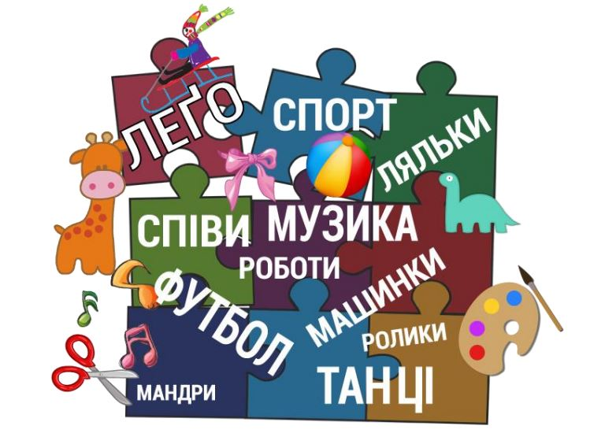
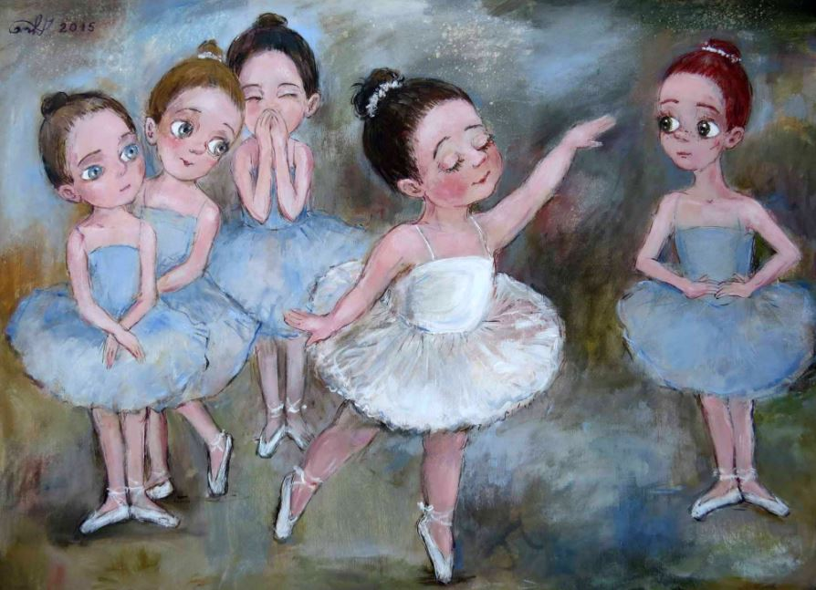

Тиждень 17. Світ захоплень
Дослідницькі / проблемні запитання
- Які справи дарують мені радість?
- Чи завжди захоплення нам на користь?
- Як знайти для себе нове захоплення?
- Чи варто мати захоплення?
Завдання для тижня
- Допомогти дітям визначити власні зацікавлення, уподобання.
- Розвивати в учнів уміння натхненно розповідати про свої захоплення.
- Сприяти розвитку нових захоплень.
- Вчити робити висновки-узагальнення за результатами навчальних завдань.
- Навчати висловлювати свою думку, уважно слухати, спілкуватися та взаємодіяти з однокласниками.
Очікувані результати навчання
Наприкінці тижня учні знатимуть:
- назви і види деяких популярних дитячих захоплень;
- яку користь /шкоду можуть приносити дитячі захоплення;
- чим захоплюються однокласники;
вмітимуть:
- пояснити, як від власних захоплень / уподобань може залежати успіх та добробут у майбутньому;
- розказувати про власні захоплення / вподобання;
- презентувати результати власної творчості;
- уважно слухати один одного в умовах безпосереднього спілкування.
Корисні завдання
Хмара слів “Світ захоплень” (до с. 5 підручника)

Завдання до хмари слів “Світ захоплень”
- Роздивіться хмару слів і знайдіть знайомі букви.
- Скільки слів ви знайшли у хмарі?
- Знайдіть і прочитайте слова. Які з них ви знайшли одразу, а які довго шукали? Чому?
- Намалюйте до всіх слів хмари зображення, які допоможуть їх швидко пригадати.
- Що об’єднує зібрані у хмарі слова?

- Де відбувається дія на малюнку? Розкажіть про ситуацію, яку зобразила художниця.
- Як танцює маленька балеринка? Чи отримує вона задоволення?
- Та чи всім подобається її виступ? Звідки ви по це дізналися?
- Як ви думаєте, чому так діють дівчатка? Чи правильно це?
- Чи справжні вони подружки?
- Як ви почувалися б на місці дівчинки? Чим відповіли б? Чому?
Поробка з паперу “Веселе мишенятко” (до с. 9 підручника)
Мультфільм “Кротик і фарби” (із циклу “Кротик”) (до с. 7 підручника)
Кросворд про захоплення (до с. 5 підручника)
Знаходимо у хмарі букв назви захоплень